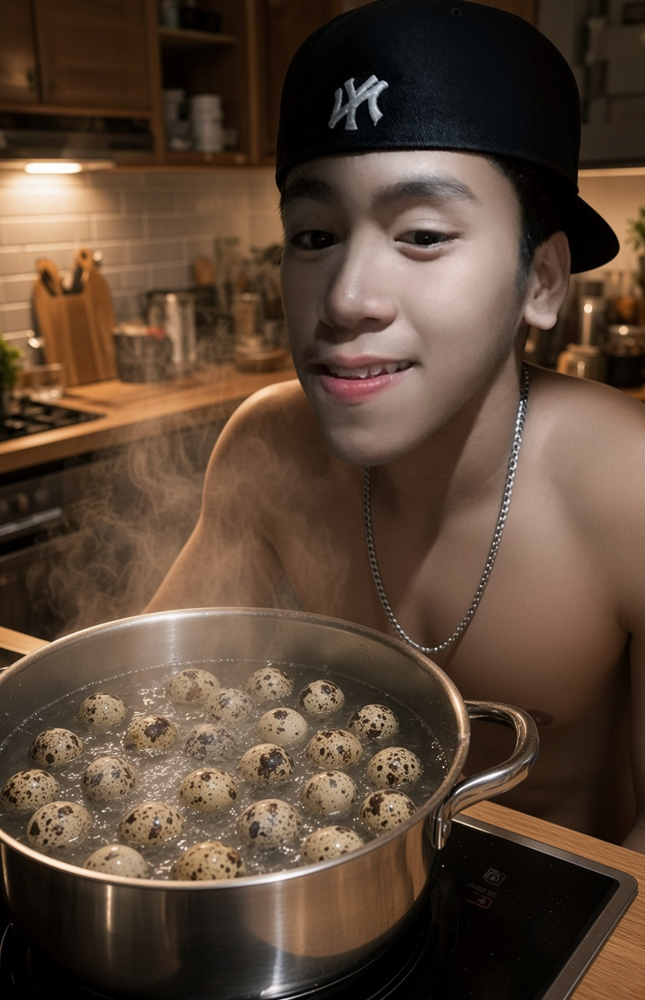
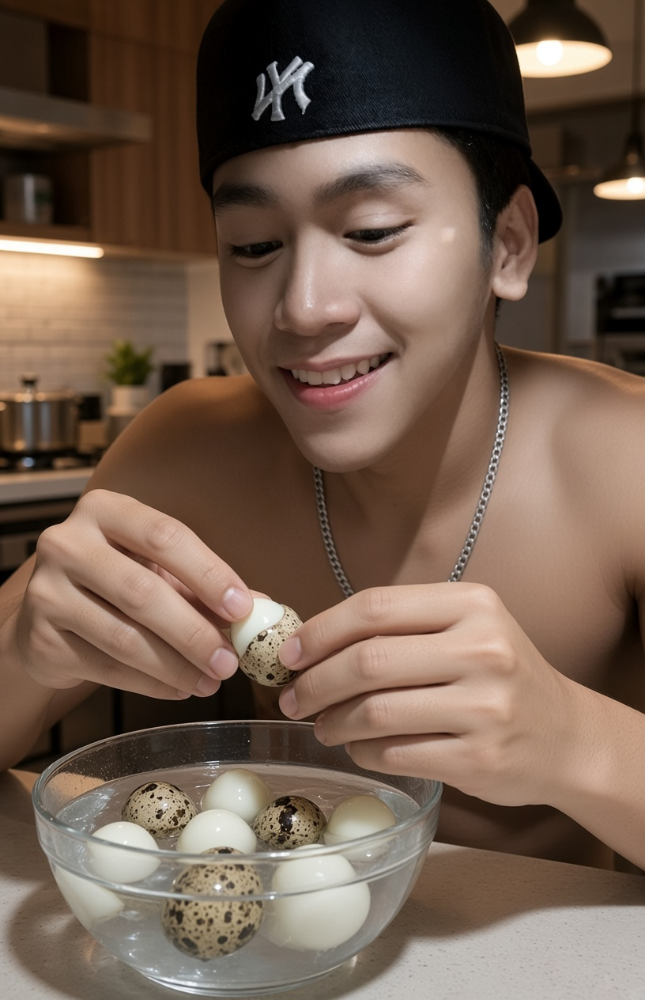
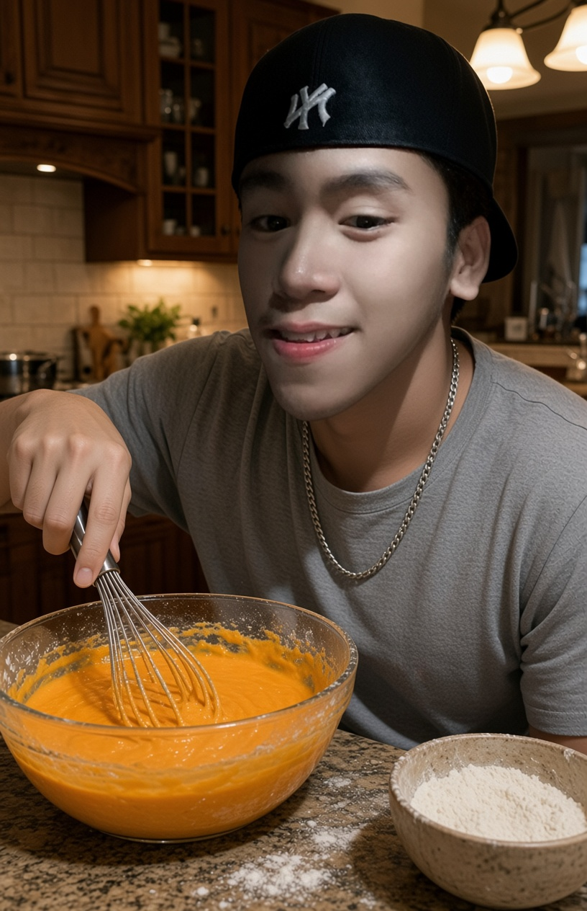
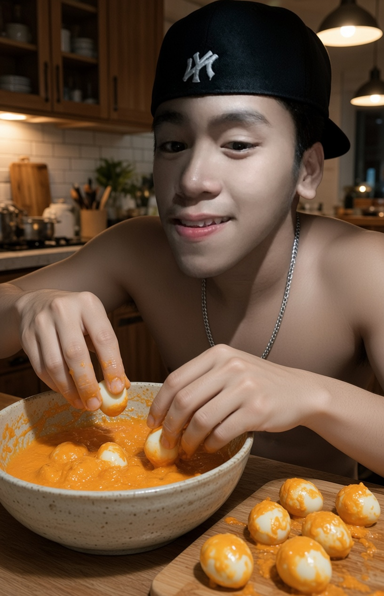
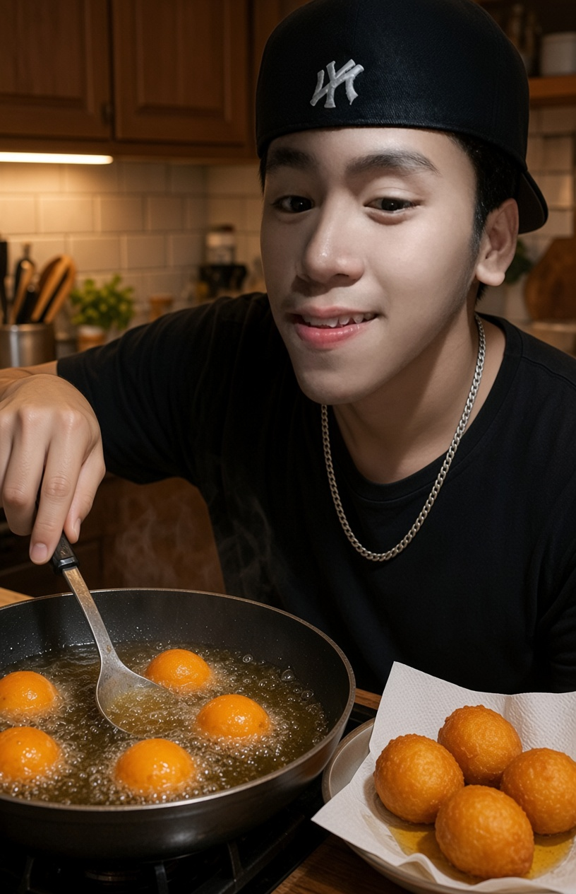
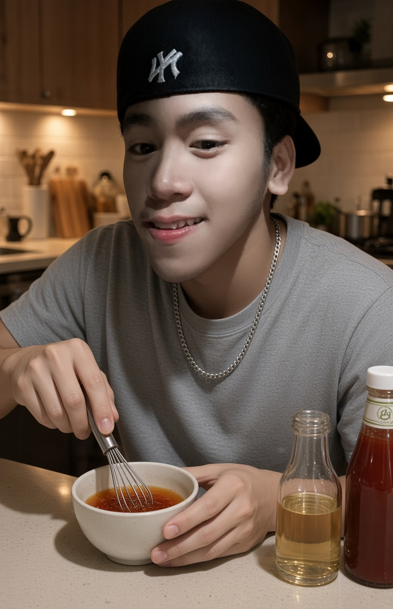
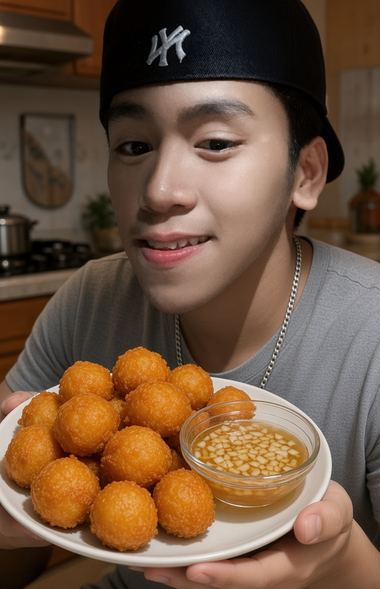

THE SECRET
Click To Learn The Recipe Step by Step
Boil 20–30 quail eggs for 5–7 minutes until hard-boiled.

Cool the eggs in cold water, then carefully peel the shells.

Mix flour, baking powder, salt, pepper and orange coloring with water.

Roll the eggs in flour, then dip them in the orange batter.

Deep-fry until golden orange and crispy (2–4 minutes).

Mix vinegar (suka) with chopped onion and garlic.

Serve hot kwek-kwek with the suka sauce. Enjoy!
